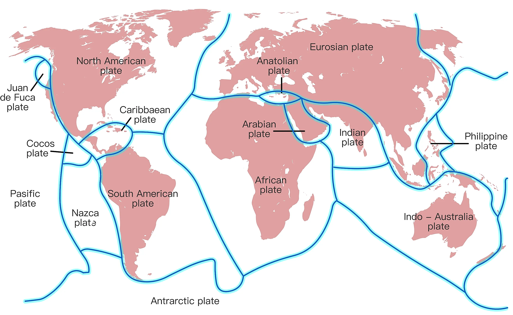
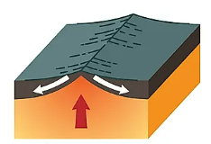
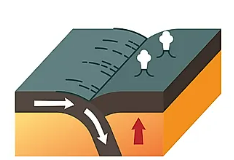
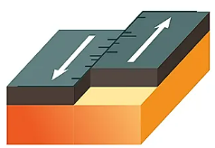
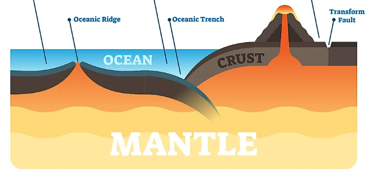

Lifestyle





Introduction: Aspects of Earth’s Terrain, what do tectonic plates do?
The Earth is a big place. It has different forces that create things like mountains, volcanoes, and rivers. The Earth has three layers: a core that acts like a battery, a middle layer called the mantle, and an outer layer called the crust. The crust is made of puzzle-like pieces called tectonic plates that undergo continuous movement creating the fundamental concept of plate tectonics. The Earth is a dynamic place that allows the tectonic plates to contribute to the Earth’s transformation of the landscape.
Tectonic plates can be viewed as Earth's jigsaw puzzle pieces since it is constantly moving around. There are boundaries that tectonic plates meet, such as the bottom of the ocean or viewing it as a jigsaw puzzle piece where one piece slides under another. This movement changes the Earth's surface over a long time. A significant aspect of Earth is that it's the only rocky planet in our solar system that exhibits a puzzle-piece movement. We can see evidence of it in rocks formed from processes like pulling apart, which is called Rifting, smashing together, which is called Collision, and one piece sliding under another which is called Subduction (Zheng Y, 2021).
Discussion
With the context of tectonic plates, rifting happens when a singular tectonic plate undergoes a process of division, causing splits with two or
more tectonic plates resulting in them to move away from each other, called divergent plate boundaries. This will create normal fault valleys,
which is when the Earth’s crust is being pulled apart, as well as small tilted mountains, and volcanism, which is magma erupting onto the surface
(Joseph A. DiPietro, 2018).
Various types of rifting can occur with tectonic plates, such as Continental Rifting. Continental Rifting is characterized by the stretching or
thinning of the terrestrial outer lithospheric layer, the solid, outer part of Earth, including the brittle upper portion of the mantle and the
crust (Olivier Merle, 2011). This will cause the continents to break apart from each other, and form a mid-ocean ridge, which is when a new ocean
floor is created, and a continuous range of undersea volcanic mountains underwater (Merle, 2011).
Rifting is significantly important, specifically continental rifting since it plays a crucial role in helping create the Earth’s surface,
and the environment, such as forming new ecosystems for animals, and potentially getting natural resources, such as minerals and oil
(Eric Ralls, 2022). A rift system can make a remarkable impact since it helps study plate tectonics, how the Earth’s crust evolves, and
understanding how the Earth is forming its surface (Ralls, 2022).
Even though Continental Rifting can have a positive outcome, it can lead to a negative outcome since it can cause earthquakes,
and volcanoes to erupt (Buiter et al., 2023). Furthermore, Earthquakes can cause the ground to start cracking making it significantly
dangerous to humans since they can fall into it (Buiter et al., 2023). Regarding volcanoes, it can significantly affect health issues
for humans since if a human inhales the volcanic ash, it can cause them to have breathing problems, and make them suffocate
(National Geographic, n.d.).
In places where tectonic plates are close to each other and make contact with each other, collisions can occur, resulting in smash into
each other. The most common type of collision is a Continental collision. When the tectonic plates underlying continents collide with
each other, which typically occurs in the ocean most of the time. This is a principal mechanism for forming topographical features,
such as mountains and islands.
If one of these plates moves underneath the other, a special process called subduction happens, which creates trenches. Most of the time,
this occurs in the ocean and not on land. This process is called subduction zones. Subduction zones can cause intense geological activities,
such as earthquakes, tsunamis, volcanic eruptions, and landslides. Moreover, the intense geological activities caused by subduction zones can
occur more frequently in the ocean (Gomberg & Ludwig, 2017).
The impact of tectonic plates colliding extends to terrestrial environments, bringing positive outcomes, as well as negative outcomes.
Regarding the unfavorable outcomes, the impact it can cause are earthquakes, tsunamis, and landslides, which can be represented as a
danger since they severely affect human safety. Although tectonic plates colliding may have a good impact on the planet, such as the
formation of topographical features, like mountains, hills, valleys, and lakes, it is still considered significantly dangerous for human well-being.
Subduction zones function similarly to Earth's recycling centers since they facilitate the transfer of materials from Earth’s crust,
atmosphere, and oceans, which go deeper layers of the mantle. In these zones, the subducted sediments and crust release water-rich fluids
into the mantle, acting like ingredients in a cooking process. This causes melting in the mantle and results in the creation of different
elements. The negative outcome encompasses formations, such as island arcs (active volcanos) and continental crust. By understanding these
recycling processes, we gain insights into the formation of volcanoes and the composition of the Earth's mantle (Bebout E. G., 1995).
Regarding the transform plate boundaries, it is the location of two plates that slide past one another. A fracture zone produces a transform
plate boundary called a transform fault. Transform faults can be considered a strike-slip fault due to the opposite direction of the movement.
In addition, transform faults are mostly found in ocean basins, and connect offsets in mid-ocean ridges, whereas a small amount connects in the
mid-ocean ridges, and subduction zones (Geology, n.d.).
Significant seismic activities can be produced by some transform boundaries, such as earthquakes, which primarily occur, and cause small
significant development of mountains or volcanism. If the plates are unable to pass each other, the forces the tectonics produced will
continuously build up, causing an earthquake to occur if the force is released. Notably, within continental plates, where transform faults
are most prominently located, moderate-to-large magnitude earthquakes frequently occur (Johnson et al., n.d.).
The impact of transform plate boundaries causes natural, as well as human-made structures that intersect a transform boundary to
split with another and be transferred in opposite directions. The natural structures, such as rocks, will be severely destroyed
while the plates are grinding with each other, causing a linear fault valley or an undersea canyon to occur. The Earth’s crust will
deform, however, the lithosphere will not be created or destroyed, meaning no loss of lithospheric material. (NOAA, n.d.).
A significant transform fault that was created was the San Andreas fault, which is the sliding of the Pacific Plate, and
the North American Plate making California split in two. San Diego, Los Angeles, and Big Sur are within the Pacific Plate,
and San Francisco, Sacramento, and Sierra Nevada are on the North American Plate. A positive impact of the San Andreas fault
is that it allows people to view the most significant fault that has transpired on the Earth’s surface today (Lynch, n.d.).
Conclusion
Finally, the Earth's dynamic character, as driven by the constant movement of tectonic plates, plays a significant influence in the development of our planet's terrain. The Earth's crust, which is made up of puzzle-like tectonic plates, is active in a variety of activities, including rifting, collision, and transformation, each with its own set of environmental consequences.
Rifting, as exemplified by continental rifting, benefits the Earth's surface by creating new habitats and
perhaps giving natural resources, but it also brings risks such as earthquakes and volcanic eruptions.
The collision of tectonic plates produces topographical characteristics such as mountains and islands, as well as the occurrence of
subduction zones, which results in geological activity that can be hazardous to humans.
Seismic activity is induced by transform plate boundaries, which are characterized by sliding plates that cause crustal deformation without causing
lithospheric material loss. A noteworthy example is the San Andreas fault, which separates California and gives a visual
representation of Earth's fundamental geological processes.
Essentially, the complex dance of tectonic plates impacts the Earth's surface while also generating chances and challenges for life on our dynamic planet.
Reference